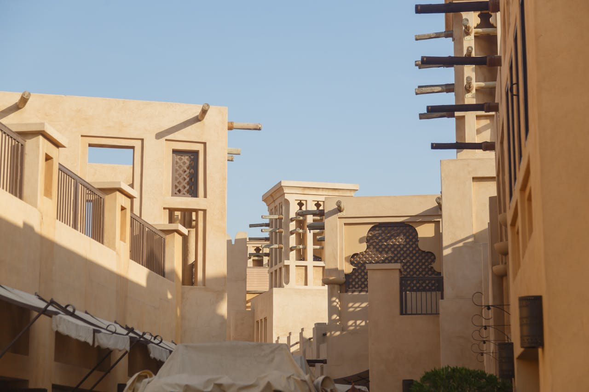

Some of the world's best degrees are being earned here. The Middle East has built a higher education ecosystem of genuine international standing. NYU. Sorbonne. Heriot-Watt. Middlesex. HBMEU. More than sixty accredited institutions, a tax-free environment, and career access to one of the world's most dynamic economic regions. Primegate helps you navigate all of it.
NYU Abu Dhabi is a distinct campus with its own admissions process, global faculty, and an independent reputation. The same applies to Sorbonne Abu Dhabi, Heriot-Watt Dubai, and Middlesex Dubai. These are first-choice destinations in their own right.
Graduates working in the UAE, Qatar, or Saudi Arabia operate in a tax-free income environment - an advantage that compounds materially over an early career. For finance, technology, energy, and professional services, it reshapes the arithmetic entirely.
Saudi Vision 2030, UAE Centennial 2071, and Qatar's national strategy are producing demand for skilled graduates at a rate that outpaces domestic supply. Graduates with a regional degree and cultural fluency sit at the front of that demand curve.
More than 200 nationalities live and work in the UAE. The campus environments in Dubai and Abu Dhabi are among the most internationally diverse in the world - not as a marketing claim, but as a demographic reality.
Dubai sits at a midpoint between Europe, Asia, and Africa. The professional networks formed here have a geographic reach that networks formed in Boston or London do not - a structural advantage for global trade, technology, or international finance.
Dubai has built the most diverse higher education free zone in the world in Dubai International Academic City - a purpose-built hub hosting more than twenty international universities on a single site. Heriot-Watt University Dubai, Middlesex University Dubai, the University of Birmingham Dubai, and SP Jain School of Global Management operate as fully independent campuses. Dubai's academic culture is entrepreneurial, internationally networked, and deeply connected to the surrounding business community.
NYU Abu Dhabi and Sorbonne Abu Dhabi define the upper tier of Abu Dhabi's academic profile - both fully-residential, internationally selective campuses. The ecosystem also includes Khalifa University, ranked among the world's top engineering institutions, and HBMEU, a pioneer in digital and executive education. Abu Dhabi's environment is more research-oriented and government-integrated - a distinction that matters for students in policy, energy, sustainability, or advanced sciences.
Qatar Foundation's Education City in Doha is one of the most ambitious education infrastructure projects ever executed. Eight internationally ranked universities - including Carnegie Mellon, Georgetown, Northwestern, and Cornell Medicine - operate full degree-granting campuses within a single, purpose-designed environment.
King Abdullah University of Science and Technology (KAUST) is one of the world's top research universities by citation impact. Saudi Arabia's Vision 2030 is driving rapid expansion of private and international higher education. For students with a STEM focus and appetite for the region's transformation story, Saudi Arabia is no longer a peripheral consideration.
The UAE is among the safest countries in the world by any measurable standard. Healthcare is world-class. Infrastructure is genuinely modern. The food, cultural, and entertainment ecosystem of Dubai and Abu Dhabi is as varied as any major global city.
Cultural expectations vary by emirate and context. Primegate provides every inbound student with an honest, specific cultural orientation - not a glossy brochure, but a practical guide to navigating the environment with confidence and respect. This preparation is part of the advisory.
Graduates who stay in the region enter a job market actively seeking international talent, offering compensation unencumbered by income tax, and access to business networks spanning three continents.
Graduates who return home do so with a credential from an internationally accredited institution, professional experience in one of the world's fastest-growing economies, and a regional network most peers simply do not have. Primegate helps students think through which path they are building toward - before they choose an institution, not after.
For institutions operating under direct accreditation from their parent university - NYU, Sorbonne, Heriot-Watt, Georgetown - the degree conferred is identical in academic standing to the degree from the home campus.
The UAE consistently ranks among the top ten safest countries in the world. Campus environments are internationally managed with student support frameworks that meet or exceed Western institutional standards.
Yes, with restrictions. Student visa holders in the UAE may work part-time under regulated conditions. Primegate advises on this in detail during pre-arrival preparation.
Most English-medium institutions accept IELTS 6.0-6.5 or TOEFL 80-90, with variations by programme. Primegate maps your current scores against institutional requirements at the shortlisting stage.
No. The language of instruction at all institutions Primegate recommends is English. Arabic is not required to live, study, and work in the UAE in an English-medium professional environment.
Some of the most generous merit scholarships available globally are at Middle Eastern institutions - particularly NYU Abu Dhabi, KAUST, and Qatar Foundation campuses.
Many graduates do, and they leave with a distinct competitive advantage. A degree from an internationally accredited institution plus professional experience in a global financial hub adds value to any subsequent application.
One conversation with Primegate is often enough to reframe what is possible - and what is optimal - for a student whose ambitions extend beyond conventional destination choices. We are happy to begin there.